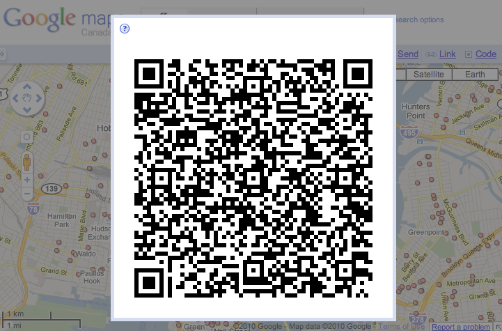

Instructions
QR Maps helps you get Google Map addresses onto your phone quickly and easily. To use it:
- Find a location, or generate some directions on Google Maps.
- Click the
 link (it's just above the top-right corner of the map).
link (it's just above the top-right corner of the map). -
Scan the code on your screen using your phone's QR code reader.

Your phone should now be showing you the same location or directions you were looking at on your computer.
Support
This extension is open source, and you can find support on the qrmaps project page.
If you encounter any bugs, please report them on the issues site.
Credits
Thanks to Yusuke Kamiyamane for making terrific free icons.
This extension was written by Dave Heaton.